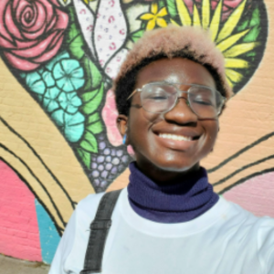

In the Digital Research Internship program, undergraduates gain technical and organizational skills and build a diverse portfolio of technology projects. Students, working on a scrum team, receive tangible experience in technology and feminist leadership while working on the digital projects of Tulane faculty in the humanities, social sciences, and sciences. Students work in technical areas such as coding, digital archiving, web design, database development, design thinking, digital design, UX/UI, and AV editing. This paid internship supplements students’ majors and minors when seeking employment or prestigious technology internships.
Digital Research Internship Teams/h2>
2020-2021 Team - Tech in Mind Zine
-

Dr. Jacquelyne Howard
SCRUM advisor -

Lindsay Hardy
Project Manager - Fall 2020/Spring 2021 -

Lucien Mensah - Linguistics, Computer Science
Team Lead - Fall 2020/Spring 2021 -

Emily O'Connell - Computer Science, French, Minor: IT
Team Lead - Fall 2020/Spring 2021 -

Kila Moore
Team Member - Fall 2020/Spring 2021 -
Erica Casareno - Neuroscience, Minor: Economics
Team Member - Fall 2020/Spring 2021 -

Piper Stevens - Chemical Engineering, Minor: Mathematics
Team Member - Fall 2020/Spring 2021 -

Rena Repenning
Team Member - Fall 2020 -
Lana Biren
Team Member - Fall 2020 -

Rachel Tabor - Biomedical Engineering, Minor: Mathematics
Team Member - Fall 2020 -

Sarah Fox - Mathematics, Computer Science
Team Member - Spring 2021 -
Marisa Long - Linguistics, Computer Science
Team Member - Spring 2021 -

Danielle Walder - Economics, Information Technology
Team Member - Spring 2021
Projects
- Technologies: Airtable, Microsoft Access
- Technologies: WordPress, Database Administration
- Technologies: WordPress, Localhost Development
- Technologies: WordPress, Database Administration
- Technologies: Adobe Photoshop
- Technologies: WordPress, Tableau, Flourish
- Technologies: Qualtrics
- Technologies: Technologies: WordPress, Tableau
2019-2020 - Tech in Mind Zine
-
Dr. Jacquelyne Howard
SCRUM advisor -
Adelaide Jasica
Project Manager -

Lindsay Hardy
Team Member -

Rosalind Kidwell
Team Member -
Gabriela Taras
Team Member -

Piper Stevens
Team Member - Years -
Emily O’Connell
Team Member - Years -
Rena Repenning
Team Member - Years -
Aly Greengrass
Team Member - Years
Projects
- Geoff Dancy, "Transitional Justice Database Project”
- Kate Adams & Susan Tucker, “Beautiful Sisterhood of Books Database Project”
- Jaelle Scheuerman, “Artificial Intelligence for Social Good”
- Chris Oliver, “Plotting a critical visualization media lab”
- Elizabeth McMahon, “Letters from Africa Project”
- Mirya Holman, “Mapping Politics, Intersectionality, and Equality in New Orleans Github”
- Tony Weiss, “Macroeconomic Graphs A/V Project”
- Kelsey Williams and Sally Kenny, “Kenya Reproductive Health Website”
2018-2019 Team- Newcomb: Tech in Mind Zine
-
Dr. Jacquelyne Howard
SCRUM advisor -
Siyang Hu
Project Manager -
Lindsay Hardy
Team Member -
Caroline Hixon
Team Member -
Addie Jasica
Team Member -
Shona Shang
Team Member - Years -
Kodhai Thirumalai
Team Member - Years -
Sarper Tutuncuoglo/h4> Team Member - Years
Projects
- Sue Mobley, “Sites of the Resistance”
- Jaelle Scheuerman, “Engaging Community Stakeholders in Artificial Intelligence”
- Roseanne Adderly, Ph.D., “Frances Joseph Gaudet Legacy Project”
- Kate Adams, Ph.D. and Susan Tucker, Ph.D., “This Beautiful Sisterhood of Books”
- Geoff Dancy, Ph.D., “The Transitional Justice Database”
- Tony Weiss, “Macroeconomic Graphs A/V Project”
- Joan Jensen, “Junior Philharmonic Society of New Orleans”
- Dan Sharpe, Ph.D. “The Music Box Village Videos”
2017-2018 Team- Newcomb: Tech in Mind Zine
-
Dr. Jacquelyne Howard
SCRUM advisor -
Avery Fiftal
Project Manager -
Sarper Tutuncuoglo
Team Member -
Olivia Woo
Team Member -
Caswell Ellis
Team Member -
Adelaide Jasica
Team Member - Years -
Erin Blake
Team Member - Years -
Laura Bartusiak
Team Member - Years
Before 2017 - Collat Media LabNewcomb: Tech in Mind Zine
-
Jaelle Scheuerman
SCRUM advisor -
Nattamin Rawanghet
Team Member/span> -
Cassie Wang
Team Member -
Maya Pelichet
Team Member -
Rebecca Roth
Team Member -
Candace Ross
Team Member - Years -
Lauren Dean
Team Member - Years -
Kayla Jackson
Team Member - Years -
Alyssa Byrnes
Team Member - Years -
Olivia Mahler-Haug
Team Member - Years -
Elizabeth Berganza
Team Member - Years -
Robin Taylor
Team Member - Years -
Juliana Stricklen
Team Member - Years -
Katherine Wu-Ho
Team Member - Years -
Kelsey Reynolds
Team Member - Years -
Alexis Clarke
Team Member - Years -
Anna Julia Cooper/h4> Team Member - Years
-
Annelise Blanchard
Team Member - Years -
Nicole Agron
Team Member - Years -
Kevin Walberg
Team Member - Years -
Ticial Francisco
Team Member - Years -
Olivia Cabello
Team Member - Years
Projects
- Rosalind Hinton, Ph.D., “NOLA Jewish Women”
- Joan Jensen, Ph.D., “Reviving the Memories of the Junior Philharmonic Society of New Orleans”
- Geoff Dancy, Ph.D., “Transitional Justice Research Collaborative”
- Vicki Mayer, Ph.D. “Gephi Data Visualizations”
- Dan Sharpe, Ph.D. “The Music Box Village Videos”
Projects
- “College Code and Humans of Tulane”
- Melissa Harris-Perry, “Voices Heard: Anna Julia Cooper Project”
- Dr. Elisabeth Gleckler, “Public Health Teaching Media: Women Experts on Key Topics”
- Cell_No Lending Library
- Red Tremmel, “Poetry and Rhetoric: Stories from Queer Students of Color”
- Dr. Townsend Gard and Jaelle Scheuerman, “Pixciter:Mobile Application Prototyping”
- “Place-Based Storytelling in New Orleans”
- Jaelle Scheuerman, “Operation Spark”
- Dr. Marva Lewis, “The Natural Connections Center for Research and Training”
- Susan Tucker and Jaelle Scheuerman, “Newcomb Oral History Project”
- Vicki Mayer and Jana Lipman, “Locating Women’s Labor in New Orleans”
- Anastasia Kurdia, “Enhancing Educational Materials in Computer Science”
- Alison Truitt and Jaelle Scheuerman, “Dreaming of Money in Ho Chi Minh City”
- “HerStory NOLA”
- Vicki Mayer, “Creative Economies: Documenting Creative Labor in New Orleans”
- Chloe Raub, Samantha Bruner, Mary Blue, “Newcomb Oral Histories: Digital Files Cleanup and Relocation Project”
- Daniel Sharp and Luisa Dantas, “Appalachia Music Project”! link broken
- Nancy Maveety, “The Beverly Blair Cook Papers Website”
- Anne-Marie Womack, “Accesible Syllabus”
- Jaelle Scheuerman and Dr. Michelle Sanchez, “Bridging the Gap: Teaching Girls Computer Programming”
- Rosalind Hinton, “LA Out Loud”